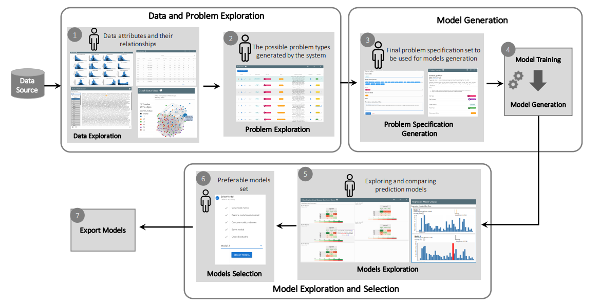

This project addresses the task of automating the data analysis pipeline by aiding users in selecting
complex model pipelines through data-driven automated processes. With our proposed system, a subject
matter expert (SME) with little or no background in data science will still be able to perform
complex data analysis without understanding the mathematics behind the analysis.
Subject matter experts (SMEs) would benefit from using the sophisticated data analysis pipelines
that are the purview of practicing data scientists. The overarching goal of this project is to
provide data-driven automated assistance to SMEs so that they may produce models as performant as
those produced by data scientists. Our role in this research is to provide an interface between the
human user (a SME) and machine learning algorithms that generate data analysis pipelines. Within
this task, we aim to help users define their data analysis problem without the need to describe the
data analysis primitives being used. We will also design interactive visualizations to communicate
the difference between models and to help the user choose the best model for their task. Lastly, we
will provide methods of interaction that would allow the user to use their domain knowledge to
update and improve the models produced.
If successful, this research could have broad impact on the ability of all subject matter experts
to learn from their data. Currently, SMEs are limited to the set of models they have access to and
are comfortable with. Giving them access to cutting edge pipelines will give them models that are
much more performant. Creating an effective interface between the human and the machine is integral
to this broad impact. It is critical that users can effectively utilize and trust the automated
methods, and communication of the produced models is necessary to prevent false negatives and false
positives, overfitting the data, and other problems relating to the modeling process. We are in the
big data age as the everyday user produces and has access to large amounts of data. This project
would bring data analysis to the everyday user; it would render that data accessible.